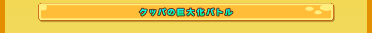
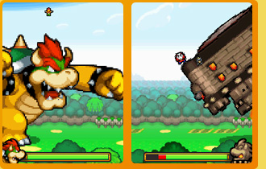
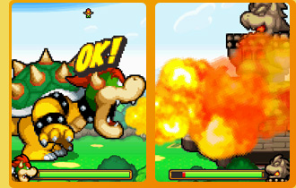

窪田： |
クッパが巨大化するという要素は企画書には当初から入ってはいたんですけど、具体的にどのように表現していくかはあまり深く考えていなかったんです。制作の途中から本格的に考え始めたんですけど、最初は背景の絵が縮小されて、相対的にクッパが大きく見えるというものを想定していたんです。任天堂さんからインパクトが足りないというお話をいただいて、それを受けていろいろ試行錯誤していきました。 |
||
―― |
試行錯誤を経て現在のDSを縦に持ってのバトルというアイデアに繋がっていくんですね。 |
||
窪田： |
縦持ちにしてしまうと当然バトルのシステムがまったく変わってしまうので、ミニゲーム的な遊びで巨大化を演出しようという案を出したのですが、やはりバトルにしてほしいと（笑）。そうなると全部作り直しになってしまうので、これが今回開発の中で一番の大パニックだったかもしれません。 |
||
大谷： |
任天堂としては、やっぱりダイナミックさのひとつとしてクッパの巨大化は絶対にやらなきゃいけないと思っていました。普通の戦闘がある中での区切りとしてもインパクトを大事にしたかったんです。マリオの生みの親である宮本にも制作の節目ごとに見せていたのですが、DSの画面の中で巨大化したクッパがすごく滑らかに動いていることに驚いていました。 |
||
深沢： |
一画面を埋め尽くすくらいの大きなクッパが滑らかにパンチを出すようにしたい、という話をされたときは、これは無理なんじゃないかと思いましたね。しかも敵もいて、2画面ともに使ってズームもするとなると、これは動かないだろうという話をしまして（笑）。すでにプレイされた方はご存知のように、線をちょっと粗めにすることで、動きの手ごたえを損なわずに巨大化したクッパのダイナミックさを押していけばギリギリで入るんじゃないかという話になりました。 |
||
窪田： |
巨大さを表現するために絵的な表現で裏技を使っているんです。 |
||
岩崎： |
もともとの大きさがわかるものを小さく入れることで、クッパはこんなに大きいんだと感じてもらえるようになっています。クッパ軍団などのネタを細かく仕込んでいきました。他にも距離感を出すために手前に配置されたものがスクロールするスピードよりも速く動かすなど、巨大さの表現には非常に苦労しました。 |
||
  |
|||
窪田： |
そういうところをいろいろ積み重ねて全体的な巨大感を作っていっています。 |
大谷： |
巨大クッパにはもうひとつ問題があって、スケジュール的な問題で巨大クッパのグラフィックを作る人員が足りなかったんです。そこで登場したのが… |
佐野： |
はい。もともと私はデザイナーだったので、絵を描きたいとずっと言っていたら、「じゃあ描く？」と。いくつかお手伝いさせていただきました。 |